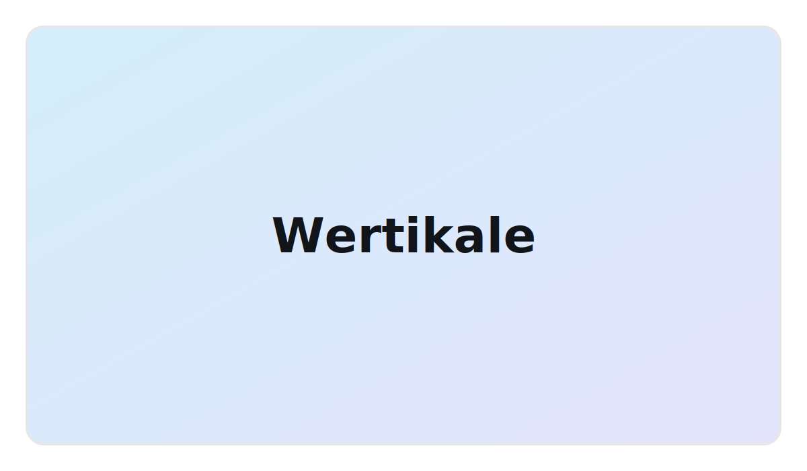

Produkt
Wertikale
Pionowe lamele do dużych przeszkleń — praktyczne w biurach i domach.

Najważniejsze cechy
- Wysoka jakość materiałów
- Precyzyjny mechanizm sterowania
- Montaż bezinwazyjny lub tradycyjny
Kolory i tkaniny
Dziesiątki kolekcji i setki odcieni. Na życzenie próbnik u klienta.
- Tkaniny zaciemniające / transparentne
- Odporność na wilgoć
- Łatwe czyszczenie